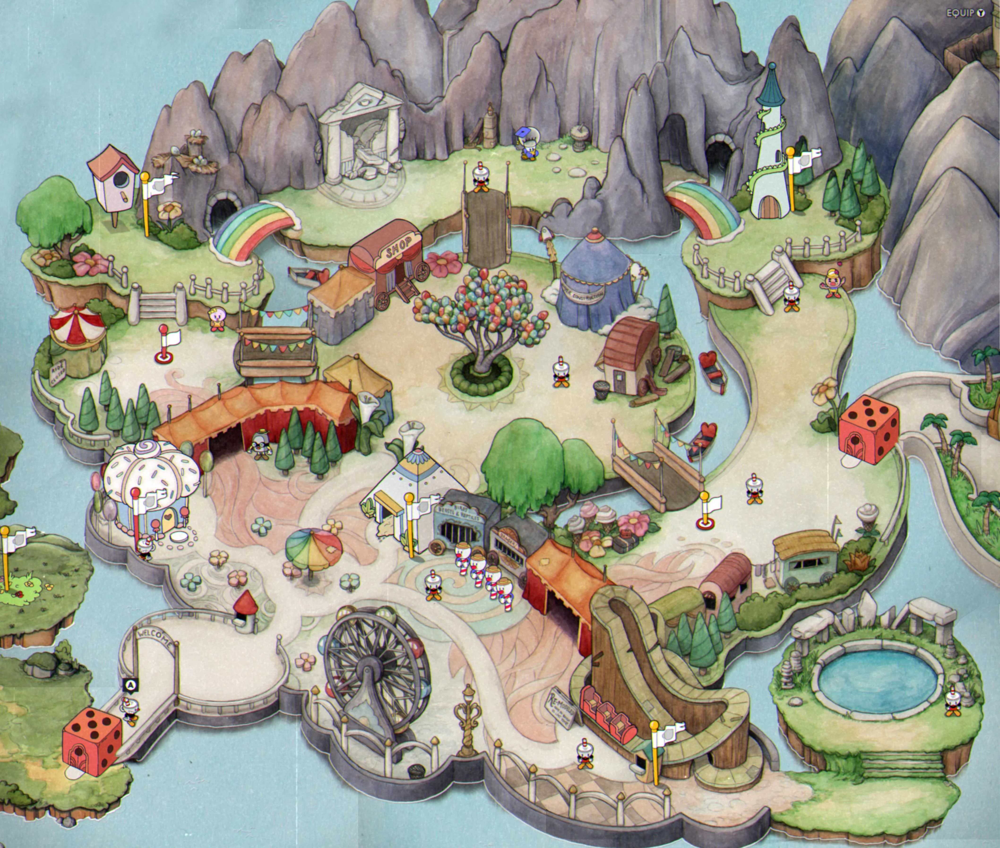

Um jogo completo como o Cuphead não seria apenas o que nós é mostrado explícitamente dentro do jogo, ele tem detalhes ricos e escondidos dentro do jogo também, além de atrair toda a comunidade da internet com seus detalhes
Detalhes in-game que às vezes passam desapercebidos: Segredos

Chamou atenção do Guinness Book! Livro dos Recordes
Na internet, grandes criadores de conteúdos quiseram gravar vídeos sobre o jogo: Youtubers que gravaram